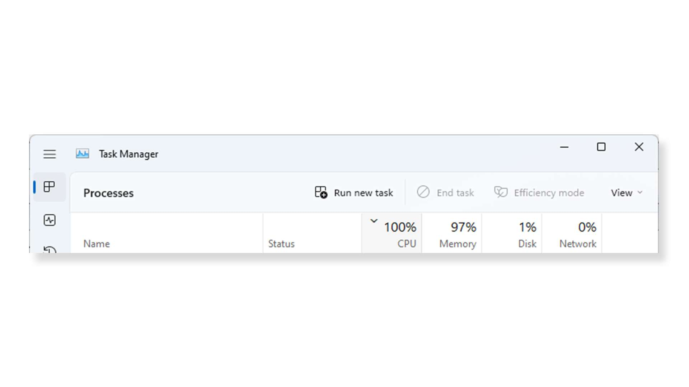

Learn about various hardware & system configurations so you can find the best pre-built gaming PC.1 2
Pre-built gaming PCs are an ideal option for those who want the advantages of a gaming PC but don’t want to build one. These machines come in a broad range of hardware configurations designed to support all levels of performance.
If you’re gearing up to buy a pre-built system, the following information is designed to help you make an informed decision. If you’re still on the fence between buying or building a PC, check out our guide on pre-built vs custom PCs.
This article will cover some of the primary considerations when choosing a pre-built PC, including:
- Case design and aesthetics, or how to choose a case that fits your gaming environment, your visual preferences, and has the feature set you need.
- System performance, or an overview of the components you’ll need for gaming.
- Ports and connectivity, or the additional features you’ll need for connecting external devices and to the internet.
Case Design

Gaming PCs come in different dimensions and a wide variety of visual styles. Many of these differences are functional, such as space or cooling considerations, while others are purely aesthetic.
Unless you have unique size considerations, mid-tower/ATX cases are often the best all-around choice for a gaming system. They are the most common configuration for pre-built systems, and can support a wide variety of components, including larger graphics cards or cooling systems. If you do need to work on the system, the design of these cases can make it easier than on some of the more compact options.
That said, you should think about where you want to put your PC. Mini towers/Micro ATX cases and small form factor (SFF) PCs may be better options for those with limited space. Though the smaller size might mean proprietary hardware or more compact internal configurations that are harder to upgrade, the trade-off might be worth it if a smaller footprint is preferable for your setup.
Outside of the size of the case, other design decisions should factor into your purchasing decision:
- Front panel connectivity. Ensure the front panel has enough quick-access USB or audio ports for connecting peripherals and devices that frequently need to be unplugged, like controllers, phones, headsets, and external storage. Otherwise, you may have to connect them to the back of the system, which can be more difficult to access depending on your setup.
- Rear panel connectivity. Likewise, the back panel should have sufficient ports for devices that stay plugged in long-term, like your monitor, Ethernet connection, mouse, and keyboard. Think about the devices that you will be using, or that you want to use later on, and ensure the system you’re considering supports them.
- Future upgradeability. Consider a larger case if you’re interested in tinkering with your system. Though you can certainly still work on smaller systems, compact configurations tend to be more complex and potentially more challenging than a standard ATX build. If future upgrades are a consideration, a more spacious case also means more flexibility when it comes to larger hardware. Not all pre-built systems are designed to be opened, however, so consult any relevant warranties before attempting to work on a system for the first time.
- Cooling and airflow. Gaming desktops use various methods to keep the components inside sufficiently cool, and the more powerful the hardware, the more important proper cooling becomes. A pre-built system will likely have been built with a cooling system appropriate for the components inside. This means it shouldn’t be too much of a concern, unless you’re planning to upgrade later. For more about system cooling, check out this guide to the importance of keeping your PC cool or read about liquid and air CPU coolers.
- Visibility. Gaming desktops frequently feature transparent side panels that provide a windowed view of your system’s inner workings. There are pros and cons to the materials used in these panels. Panels made of tempered glass are easier to clean and more resistant to scratching, while acrylic panels are lighter and more durable.
- Aesthetics. Cosmetic options such as user-controlled interior and front panel lighting can add flair to your setup, and may allow you to adjust features to your liking. Different brands and configurations have distinct visual styles, and though these options are often purely cosmetic and don’t impact performance, it’s a worthy consideration.
System Performance
Pre-built gaming PCs are capable of delivering an excellent PC gaming experience—provided the components can deliver the experience you want. Performance in-game and out is directly tied to the capabilities of the system’s CPU, GPU, RAM and storage.
To get a sense of what hardware configuration you need, come up with a list of a few games you want to play, taking note of their system requirements. Then, check those requirements against PC specifications while shopping. A build that meets the recommended requirements should be able to run the game well, while going above the requirements for the CPU and GPU can further improve in-game performance.
If you want to experience games at higher resolutions and FPS (frames per second), it’s especially important to pay attention to CPU and GPU specs. Once you’ve figured out your performance expectations, ask yourself how those expectations align with your budget. Chances are there is a pre-built system out there that strikes the right balance.
CPU
Having a capable CPU in your system is essential. The CPU is the core of your system, and impacts every facet of your experience, so it’s important to find a CPU that aligns with how you will be using your system.
- Look for a Core processor. To ensure you’re able to take advantage of the many benefits provided by modern CPUs, go with the latest Intel® Core™ processor for gaming. They have important features like higher core counts and clock speeds, and support for technologies like Wi-Fi 6.
- Choose ‘K’ to overclock. Something else to consider is whether you want to overclock. Overclocking can be an exciting way to further increase your CPU’s performance, and it’s easier to do than ever. If you want to overclock, ensure you select a system with an unlocked CPU. Look for Intel® Core™ processors with “K” after the processor number to determine if the CPU is overclockable.
- Learn about CPU features. To learn more about clock speed, core count, and additional CPU features, check out our guide on how to choose a gaming CPU.
GPU
A dedicated GPU is ideal for playing most modern games. GPUs offer a wide range of performance—from high-end to entry level—so be sure to research a GPU’s capabilities, especially if you’re looking for high resolutions, frame rates, or graphics settings.
Additionally, you’ll want to ensure your monitor and CPU are aligned with the GPU’s level of performance. Research other people’s experience with the GPU you’re considering, and compare it to the minimum and maximum system requirements of the games you’re looking to play.
- Pair the GPU with your monitor. The right GPU largely depends on the kind of monitor you’ll be using. Playing at higher resolutions requires more graphical performance, as does playing at high refresh rates. If you plan on using a 4K monitor, a 1440p monitor, or a high refresh rate gaming monitor, you’ll want a build with a high performance CPU and GPU. If 1080p is sufficient, your options open up considerably. Read here to learn more about various gaming monitor options.
RAM
When considering RAM (Random Access Memory) in a pre-built gaming desktop, capacity is usually the primary concern, with more being better.
- Choose at least 16GB capacity. Many modern pre-built gaming PCs come with at least 16GB installed, as this amount is often considered a good starting point for running modern games alongside other applications. Some pre-builts might have 8GB or even 32GB on the high-end. Less than 16GB of RAM might result in performance issues when playing newer games, while 32GB is ideal if you’re running several applications in addition to gaming.
- Consider speed secondarily. While capacity is usually the most important consideration when choosing RAM, speed is another factor to think about. RAM with speeds in excess of 3000MHz can have a moderately positive impact on in-game performance, though the benefits are generally much less pronounced than those gained from a faster CPU and GPU.
If you’re interested in learning more about memory, take a look at this guide to choosing RAM.
Storage
Your choice of storage impacts not only how many games and programs you can install at once, but also the speeds at which the system can access installed data. Faster storage can reduce load times in games, allow your system to boot up faster, and enables applications like email, media players, and web browsers to launch faster.
- Go for an SSD. Most modern pre-built systems come with solid state drives as their primary storage, which are much faster than older hard disk drives. If you have the choice between an HDD or an SSD as your primary storage, an SSD is almost always preferable.
- Look for a sufficiently high capacity drive. You’ll want enough storage space to hold your games, your operating system, and any other software you want installed. Some new games can require over 100GB of storage space apiece, and storage requirements are likely to increase over time. A 500GB primary storage drive is a good place to start, with more being better.
- Pair an SSD with a secondary HDD for additional storage. Having two storage drives is a great solution to storage space limitations, and this is a popular configuration in pre-built PCs. It allows you to use the faster SSD for storing your operating system and game library, while storing less-used files on the slower, higher-capacity HDD.
For more on choosing the right storage technology, see this guide to choosing between an HDD and an SSD.
Ports and Connectivity
The types of ports and connectivity options that come with gaming desktops are not always the same. Take a moment to read through the specs, and verify that the system you’re considering can support your devices and your connectivity preferences.
Here are some pointers for selecting a PC with an appropriate assortment of ports and connectivity features:
- Video output. External monitors connect to ports on the back of a PC, usually to the GPU in a gaming system. The most common types of display connections are HDMI and DisplayPort. Gaming monitors may require specific port specifications to take advantage of higher refresh rates or resolutions, so be sure to check for compatibility when making your selection. You can read more about displays and display connections here.
- USB. It’s useful to have ample high-speed USB ports for connecting mice, headsets, external storage drives, and other peripherals. Some specifics that are good to know when looking at the specs: revision numbers like 2.0, 3.0, or 3.2 reflect the port’s data transfer speed, with higher being the more recent and typically faster. Classifications like “Type-A” and “Type-C” refer to the shape of the connector. You’ll likely want some of each type, and the wider the variety, likely the better.
- Bluetooth. Not all desktops support Bluetooth out of the box, but many accessories that use Bluetooth or wireless functionality will come with a USB dongle to allow for their use even if this is the case. If you plan on using wireless accessories, confirm that they come with a dongle, or that the PC supports Bluetooth. This information will be listed in the specs.
- Audio. An audio port on the front panel is convenient for connecting headphones or speakers that require a 3.5mm headphone jack. Many modern audio solutions such as gaming headsets and speaker systems use USB to connect, another reason to prioritize a high number of compatible USB ports.
- Networking. Though many newer gaming desktops support Wi-Fi, some only provide Ethernet ports for a wired connection to the internet. If you need wireless connectivity, check that it’s listed in the specs: it may be referred to as WLAN in some instances. For the fastest wireless connections and optimal compatibility with the latest wireless routers and devices, look for Wi-Fi 6 support. For fast wired connections up to 1 Gbps speeds, look for Gigabit Ethernet. Learn more about networking and gaming here.
What Pre-Built Desktop Should You Choose?
Choosing the right pre-built desktop isn’t just about spending the most money. It’s also about carefully considering the different components that make up the system and matching them to your needs.
Now that you know how to find the right case, the right components, and the right connectivity options, put your knowledge to use and find the prebuilt gaming PC that’s perfect for you.